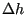
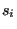
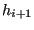
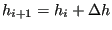
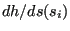
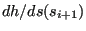
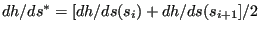
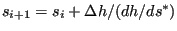
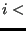

Next: Reservoir Up: Turbulent Flow in Open Previous: Wear Contents
For mode='F', the possibility of a frontwater curve is examined. This is
feasible in all conditions except for hup          hk
hk  he (mild slope). For
the calculation of the frontwater curve the equation of Bresse is integrated
using a trapezoid rule. To that end the interval of hup to the target height
is divided into (ndata-1) intervals with length
he (mild slope). For
the calculation of the frontwater curve the equation of Bresse is integrated
using a trapezoid rule. To that end the interval of hup to the target height
is divided into (ndata-1) intervals with length  and
and
For mode='B' the backwater curve starts at ndo. A backwater curve is feasible
in all conditions except for hdo hk  he (strong slope). The approach
is similar to the calculation of a frontwater curve. The target height is now
hk for a strong slope (B1 curve) and he for a mild slope (A1 or A2 curve). The
values of s and h are now stored in fields sba(1..ndata,j) and
hba(1..ndata,j). Notice that the integration now starts at ndo and moves in
upstream direction, the integration point numbers, however, are increasing in
downstream direction. Consequently integration starts at integration point ndata. The value jumpdo(j) indicates the lowest number of the
actual
integration points, 1 jumpup(j) ndata+1. A value of ndata+1
indicates that the curve in the channel element is a complete frontwater
curve. For mode='B' it is constantly checked whether a jump occurs. To this
end the routine hns.f is used. In case a jump occurs, the value jumpup(j)
corresponds the last integration point in fields sfr and hfr for the
frontwater curve upstream of the jump and jumpdo(j) corresponds to the first integration point in
fields sba and hba for the backwater curve downstream of the jump.
he (strong slope). The approach
is similar to the calculation of a frontwater curve. The target height is now
hk for a strong slope (B1 curve) and he for a mild slope (A1 or A2 curve). The
values of s and h are now stored in fields sba(1..ndata,j) and
hba(1..ndata,j). Notice that the integration now starts at ndo and moves in
upstream direction, the integration point numbers, however, are increasing in
downstream direction. Consequently integration starts at integration point ndata. The value jumpdo(j) indicates the lowest number of the
actual
integration points, 1 jumpup(j) ndata+1. A value of ndata+1
indicates that the curve in the channel element is a complete frontwater
curve. For mode='B' it is constantly checked whether a jump occurs. To this
end the routine hns.f is used. In case a jump occurs, the value jumpup(j)
corresponds the last integration point in fields sfr and hfr for the
frontwater curve upstream of the jump and jumpdo(j) corresponds to the first integration point in
fields sba and hba for the backwater curve downstream of the jump.